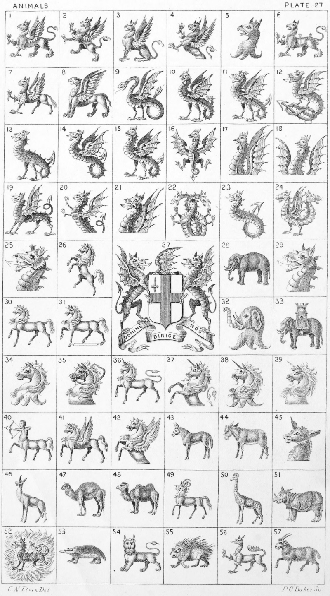

Plate 27.

Plate 27.
- Griffin passant
- Griffin Segreant
- Griffin Sejant
- Demi Griffin Segreant
- Griffin's head erased
- Male Griffin
- Hippogriff passant
- Opinicus statant
- Amphisbeme, or Amphister winged
- Basilisk
- Wyvern, or Wivern
- Wyvern-tailed nowed
- Wyvern sans wings
- Wyvern sans legs
- Cockatrice
- Cockatrice displayed
- Cockatrice's head, wings endorsed
couped
- Cockatrice's head couped between
two wings
- Dragon statant
- Demi Dragon ramp.
- Dragon's head and wings couped
- Two demi dragons interlaced
- Dragon sans wings and legs
- Dragon with two heads vomiting
fire at both ends. Crest of Maule
- Wyvern's head couped
- Horse forcene
- Arms of the City of London
- Elephant statant
- Dragon's head couped
- Horse passant
- Horse spancelled
- Elephant's head erased
- Elephant and Castle
- Horse's head erased
- Horse's head couped and bridled
- Unicorn passant
- Demi Unicorn
- Unicorn's head erased and gorged with a Ducal-coronet
- Unicorn's head couped
- Sagittarius
- Pegasus passant
- Demi Pegasus
- Mule
- Ass
- Ass's head couped
- Allocamelus
- Dromedary
- Camel
- Bagwyn
- Camelopard
- Rhinoceros
- Salamander
- Badger
- Manticora, or Man-tiger
- Porcupine
- Enfield
- Musimon